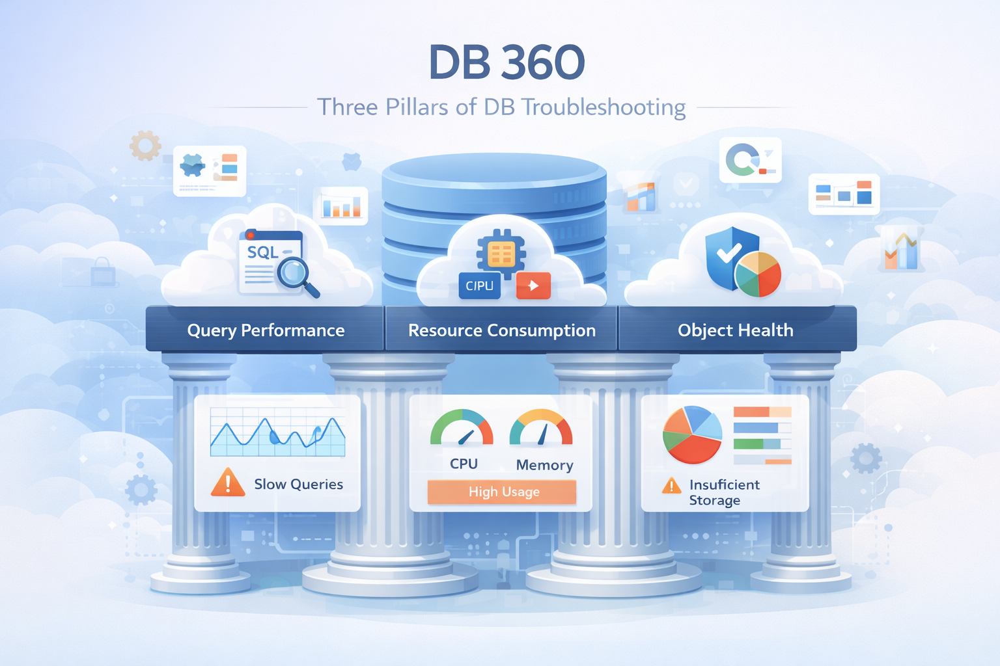
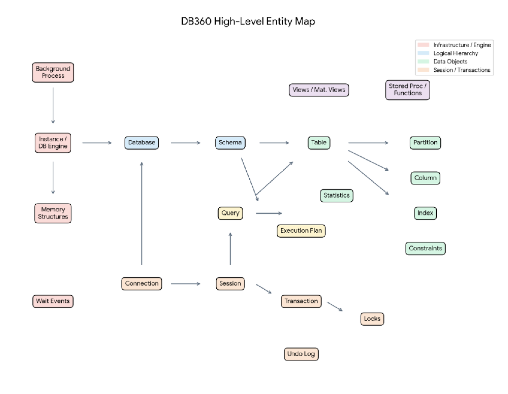
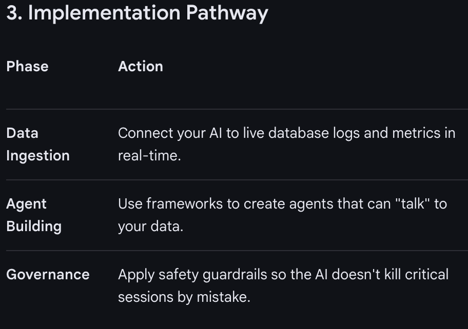
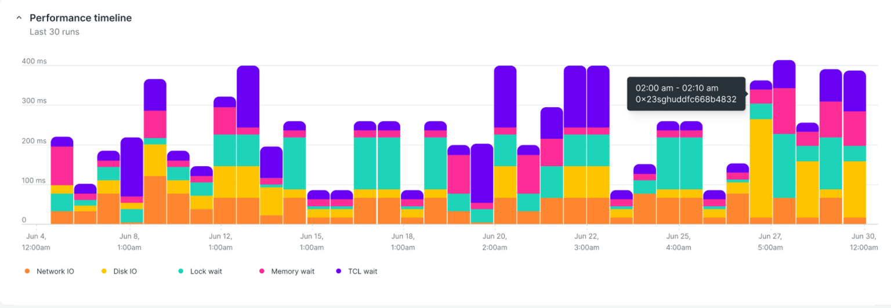
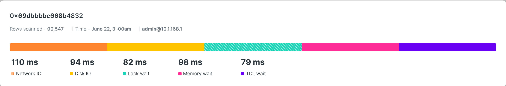
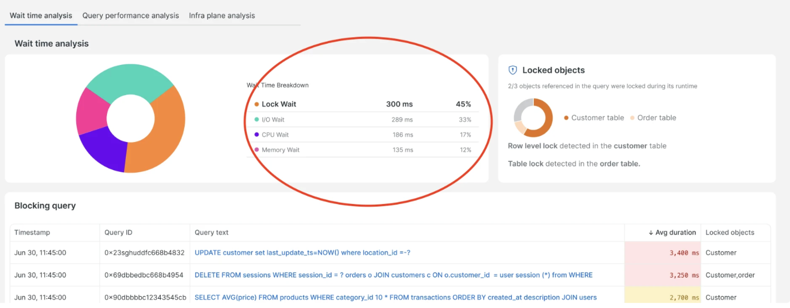
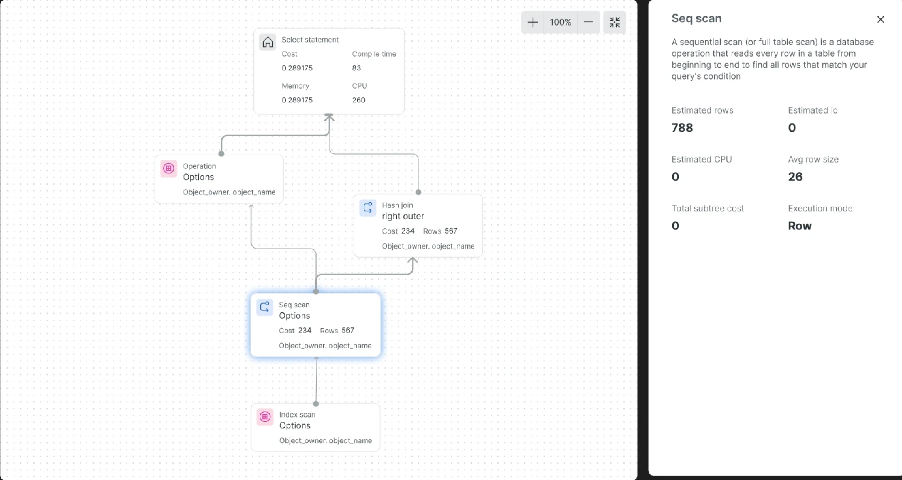
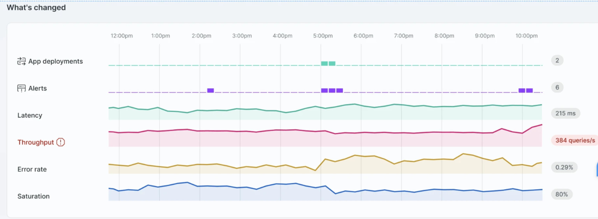

UX Design · New Relic · 2024
DB 360
Three Pillars of DB troubleshooting — Query Performance, Resource Consumption, and Object Health.

Project Story
To build DB 360, I framed the product like designing a control tower for a busy data warehouse. The goal was to show how a single request travels through the system and where database troubleshooting starts to break down.
The Request
A client knocks on the database door asking for a package of data. If too many clients arrive at once, connection pools fill up and users are left waiting. Once inside, stale sessions can keep desks occupied without doing useful work.
The Map & The Plan
The query asks for data, then the database engine chooses an execution plan. A good plan uses an index like a direct conveyor belt. A bad plan scans every shelf, and a drifting plan changes behavior unexpectedly.
The Traffic Jam
When tables are locked, queries wait. Long waits become lock timeouts, and two workers waiting on each other become a deadlock. DB 360 needed to make these wait events visible and actionable.
Problems
The core problem is resource exhaustion caused by connection and session mismanagement.
Connection Pool Exhaustion
Every database has a max connections limit. Each connection consumes RAM and an operating-system process or thread.
Session Inactivity
Idle sessions, especially sessions idle in transaction, keep resources occupied and can block healthy work.
Do-Nothing Overhead
Even when an idle session is not holding a lock, it still consumes database capacity and reduces headroom.
Solution
DB 360 turns database pressure into a clear operational workflow: detect the issue, diagnose the cause, predict the risk, and resolve the bad sessions before the database becomes unstable.
Detect
The system notices the lobby is filling up.
Diagnose
It calculates that the database will crash in 8 minutes if nothing changes.
Predict
It identifies that the loiterers are coming from one specific microservice.
Resolve
It offers a single action to kill bad sessions and throttle the service.
Users
DB 360 supports users responsible for building, operating, protecting, or benefiting from database-backed applications.

The SRE / Database Administrator
They get woken up at 3 AM because the app is down. They need high-level health alerts and a kill switch for bad sessions.

The Software Developer
Their code is slow, but they do not know why. They need to see exactly which line leaked a connection or left a session idle.

The Product Owner
Users are leaving because the site is slow. They need a simple health score to decide whether to scale or fix code.
Information Architecture
In DB 360, the challenge was not just more data — it was fundamentally different data that required intelligence to interpret. Without IA, users drown in signals. With IA, they move through the investigation with confidence.

Customers & Appreciation
Customer and appreciation details help validate demand, adoption, and visibility for the monitoring experience.

Final Design
The final design connected query performance, resource consumption, and object health into a guided troubleshooting experience.
Query Performance
The last 30 query executions use a vertical stacked bar timeline so users can spot wait-time spikes and understand whether a slowdown is a one-time issue or a repeated pattern.

Query Execution Time Breakup
The horizontal stacked bar acts as a performance waterfall, breaking down a query's total life into active work versus idle waiting to pinpoint exactly where time is being lost.

Wait Time Analysis
The pie chart breaks down query wait time. The highest wait-time slice is selected by default, with related components changing based on whether users inspect lock wait, I/O wait, CPU wait, or memory wait.

Query Execution Plan
Users can visualize the execution plan as a tree chart, making the database roadmap easier to understand and debug.

What's Changed
The existing widget tightly coupled data fetching and rendering. The redesign separates those concerns, making the widget more scalable, configurable, and reusable across teams and pages.
